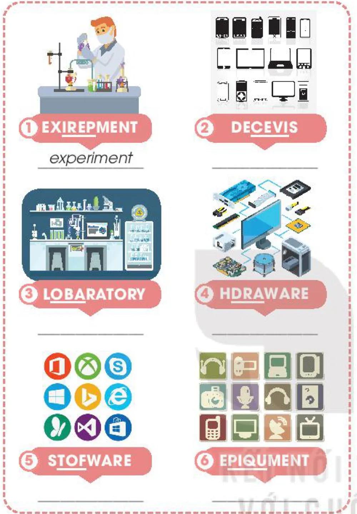

Language
Lesson 2 — Stress · invention words · grammar
5Five stops in 45 minutes
- 📅
Warm-up
Guess the years
4 min - 🗣️
Stress
Three-syllable nouns
9 min - 🔬
Words
Six invention words
5 min - ⏳
Grammar
Present perfect · V-ing / to V
18 min - 🛒
Game
Gadget Shop
7 min
By the end of this lesson…
- 🔊
Pronunciation
Stress three-syllable nouns correctly.
- 🔬
Vocabulary
Use words about inventions and science.
- ⏳
Grammar
Use the present perfect, gerunds and to-infinitives.
Guess the years
Warm-up · teams
4 minutesPut these inventions in order — oldest first
- 💡 light bulb
- 🌐 the Internet
- 📞 telephone
- 📜 paper
- 🧊 refrigerator
Answer paper (105) → telephone (1876) → light bulb (1879) → refrigerator (1899) → the Internet (1983)
Pronunciation
Stress in three-syllable nouns
9 minutesStress in three-syllable nouns
○ ● ○
inVENtion · comPUter
● ○ ○
HOLiday · CENtury
Connect all the words with the stress pattern ○ ● ○
- Internet
- family
- advantage
- chocolate
- invention
- Africa
- computer
- syllable
- afternoon
- grandfather
- tradition
- century
The path adVANtage → inVENtion → comPUter → traDItion
Vocabulary
Inventions · page 54
5 minutesUnscramble the underlined letters

1. EXIREPMENT experiment
2. DECEVIS devices
3. LOBARATORY laboratory
4. HDRAWARE hardware
5. STOFWARE software
6. EPIQUMENT equipment
Grammar
Present perfect · gerunds and to-infinitives
18 minuteshave / has + past participle
Still true now
I have lost my key. Now I can’t open the door.
Since / for
They have lived here for a year.
Just / recently
He has just finished his homework.
Circle the correct answers
1. They just found / have just found a suitable solution to the problem. have just found
2. Since people invented / have invented the first computer, they create / have created many more interesting inventions. invented · have created
3. The woman is very angry because her son lost / has lost his smartphone. has lost
V-ing or to + V?
Gerund (V-ing)
after avoid, enjoy, finish: I enjoy cooking.
as subject: Learning English is fun.
to-infinitive
after want, decide, allow: allow me to use
It’s fun to learn English. · To learn English is fun.
Note: like, love, hate + V-ing or to + V: I like playing / to play computer games.
Use the gerund or the to-infinitive
1. Many children enjoy (use) ______ modern devices nowadays. using
2. I decided (study) ______ computer science at university. to study
3. (Play) ______ language games on a smartphone is fun. Playing / To play
4. It is very convenient (study) ______ with a smartphone. to study
Gadget Shop
Review game
7 minutesWhat have you learnt today?
Today’s board
Stress: inVENtion, comPUter · HOLiday, CENtury
Words: experiment · device · laboratory · hardware · software · equipment
Grammar: have just found · since people invented … they have created … · enjoy using · decide to study
Homework: workbook Unit 5 Language; prepare Lesson 3 — Reading (page 55).